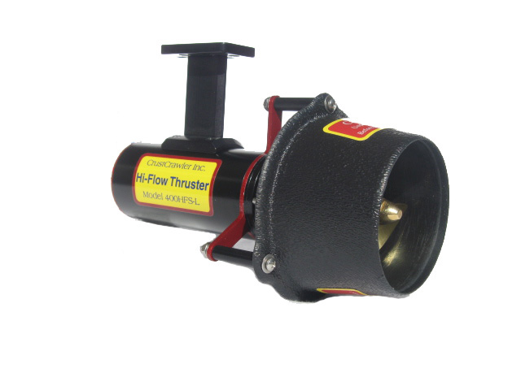
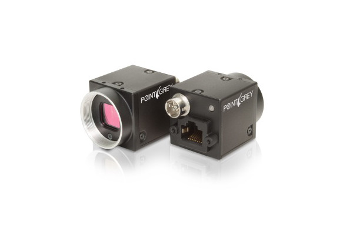
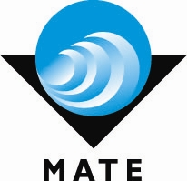

This vehicle competed in the 2015 MATE International ROV Competition in St. John's Newfoundland and Labrador, Canada. The competition simulated the underwater environment that ROV pilots experience during offshore oil and gas operations. The competition
tasks were modeled around this scenario.
The name Jaws - 2 stems from its older brother, Jaws, which has very similar design elements. Jaws -2 sought to improve upon this design.
Components

Thrusters
Jaws - 2 was powered by three Crust Crawler 400HFS Thrusters. These thrusters had numerous issues and single-handedly led to the poor performance of Jaws - 2 at the competition. These thrusters were later replaced by Seabotix thrusters which
performed vastly better.

Cameras
Jaws - 2 used a single Pointgrey Blackfly camera to stream video up a tether to a topside control station. This provided 720p HD vision to the pilot.
Competiton

MATE 2015
Jaws - 2 competed in the 2015 Marine Advanced Technology Education International ROV Competition. Jaws - 2 placed 17th our of 31 Teams at the competiton. Power issues stemming from poor thruster performances bottle necked its ability to complete
the delicate tasks underwater.